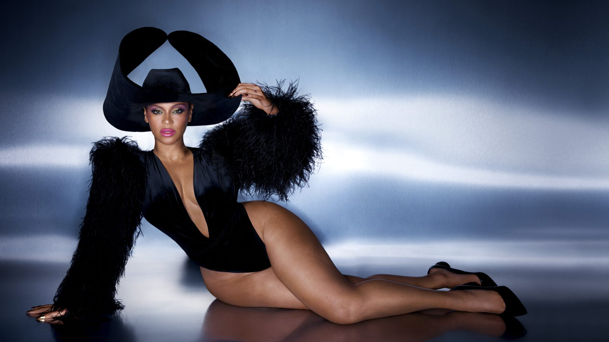

Beyoncé Giselle Knowles-Carter is born in September 4, 1981. She is an American singer, songwriter, and businesswoman.
Nicknamed "Queen Bey", she is regarded as a prominent cultural figure of the 21st century and has been recognized for
her
artistry and performances, with Rolling Stone naming her the world's greatest living entertainer and one of the
greatest vocalists of all time.
Her childhood
Beyonce Giselle Knowles was born on September 4, 1981, at the Park Plaza Hospital in Houston,
Texas to Celestine "Tina" Knowles (née Beyonce), a hairdresser and salon owner, and Mathew Knowles,
a Xerox sales manager.
Tina is Louisiana Creole and Mathew is African American.
Beyoncé's younger sister, Solange Knowles, is also a singer and a former backup dancer for Destiny's Child.
Solange and Beyoncé are the first sisters to have both had number one solo albums.
Beyoncé was raised Methodist and attended St. John's United Methodist Church in Houston. As her mother's family was Catholic, her family attended Midnight mass at St. Mary of the Purification Catholic Church on Christmas Eve. She went to St. Mary's Catholic Montessori School in Houston and enrolled in dance classes there. Her singing ability was discovered when dance instructor Darlette Johnson began humming a song and Beyonce finished it, able to hit the high-pitched notes. Beyoncé's interest in music and performing continued after winning a school talent show at age seven, singing John Lennon's "Imagine" to beat 15/16-year-olds. In the fall of 1990, Beyoncé enrolled in Parker Elementary School, a music magnet school in Houston, where she performed with the school's choir. She also attended the High School for the Performing and Visual Arts and later Alief Elsik High School. Beyoncé was also a member of the choir at St. John's United Methodist Church where she sang her first solo and was a soloist for two years.
Career
When Beyoncé was eight, she met LaTavia Roberson at an audition for an all-girl entertainment group. They were placed into a group called Girl's Tyme with three other girls, and rapped and danced on the talent show circuit in Houston. After seeing the group, R&B producer Arne Frager brought them to his Northern California studio and placed them in Star Search, the largest talent show on national TV at the time. Girl's Tyme failed to win, and Beyoncé later said the song they performed was not good. In 1995, Beyoncé's father, Matthew, resigned from his job to manage the group. The move reduced the family's income by half, and Beyoncé's parents were forced to sell their house and cars and move into separated apartments.
Mathew cut the original line-up to four and the group continued performing as an opening act for other established R&B girl groups. The girls auditioned before record labels and were finally signed to Elektra Records, moving to Atlanta Records briefly to work on their first recording, only to be cut by the company. This put further strain on the family, and Beyoncé's parents separated. On October 5, 1995, Dwayne Wiggins's Grass Roots Entertainment signed the group. In 1996, the girls began recording their debut album under an agreement with Sony Music, the Knowles family reunited, and shortly after, the group got a contract with Columbia Records with the assistance of Columbia talent scout Teresa LaBarbera Whites.
Discography
Solo studio albums:
SHOW 2013
Personal life
In 2002, Beyoncé and Jay-Z collaborated on the song "'03 Bonnie & Clyde", which appeared on his seventh album The Blueprint 2: The Gift & The Curse (2002). Beyoncé appeared as Jay-Z's girlfriend in the music video for the song, fueling speculation about their relationship. On April 4, 2008, Beyoncé and Jay-Z married without publicity. As of April 2014, the couple had sold a combined 300 million records together.They are known for their private relationship, although they have appeared to become more relaxed since 2013.Both have acknowledged difficulty that arose in their marriage after Jay-Z had an affair.
On February 1, 2017, she revealed on her Instagram account that she was expecting twins. Her announcement gained over 6.3 million likes within eight hours, breaking the world record for the most liked image on the website at the time. On July 13, 2017, Beyoncé uploaded the first image of herself and the twins onto her Instagram account, confirming their birth date as a month prior, on June 13, 2017, with the post becoming the second most liked on Instagram, behind her own pregnancy announcement. The twins, a daughter named Rumi and a son named Sir, were born at Ronald Reagan UCLA Medical Center in California via caesarean section. She wrote of her pregnancy and its aftermath in the September 2018 issue of Vogue, in which she had full control of the cover, shot at Hammerwood Park by photographer Tyler Mitchell.